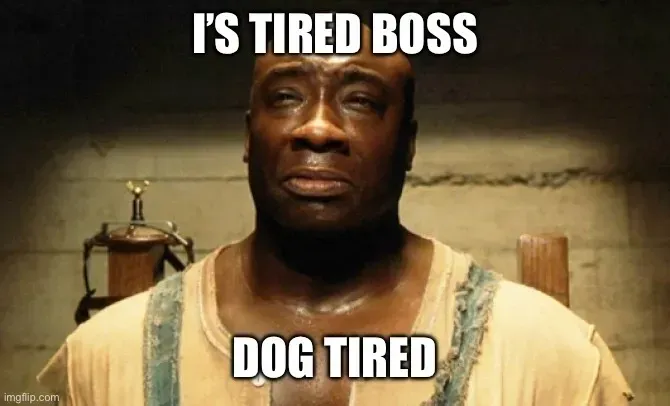

Amazon; Our Overlords Have Failed Us
tech
2025-10-21 6 min read
Look, I hate Amazon as much as the next Twitter user, but maybe we do need them after all.
What happened?
Around 11:49 PM PDT on October 19th (that's 3 AM ET for you East Coasters), AWS's US-EAST-1 region in Northern Virginia, like where a huge portion of the fucking internet lives, experienced what they're calling "DNS resolution issues for the regional DynamoDB service endpoints." It's always the fucking DNS.
What does that mean? The computers tried to ask "How do I get to the DynamoDB database?" and the internet responded with "I have no fucking clue what you're talking about." And then just… full face of fuckery lmao.
The Cascade of Incompetence
They fixed the DynamoDB DNS problem by 2:24 AM PDT. Victory, right? WRONG. Because then EC2 (Amazon's Elastic Compute Cloud) started having a meltdown since it depended on DynamoDB to launch instances. And THEN the Network Load Balancer health checks got impaired, which triggered network connectivity issues in Lambda, DynamoDB (again!), and CloudWatch.
The fuckery got even fucking worse lmao.
The Carnage (Venom reference?)
Over 50,000 people rage-filed reports on Downdetector around 7:50 AM. Unfortunately, I wasn't one of them. I was busy enjoying my self hosted stack 🖕. Snapchat, Ring doorbells, Roblox, Fortnite, Signal, WhatsApp, Coinbase, Robinhood, Zoom, Delta, United Airlines, T-Mobile, Starbucks, McDonald's, Medicare's enrollment site, UK banks like Lloyds, UK government tax websites, United Healthcare, PlayStation Network, Prime Video, Alexa, Duolingo, Venmo, Canva, and even parts of ChatGPT all went woopsy. And that's all we know of. Imagine the niche that entirely depend on AWS.
Probably lost hundreds of billions but I'm not in the finance industry. I only know computers.
The Recovery (not feat. M&M)
AWS declared the DNS issue "fully mitigated" by 6:35 AM ET, then had to backtrack at 10:14 AM admitting there were still "significant API errors and connectivity issues." Full recovery wasn't until around 12:28 PM PDT, with some lingering issues into the evening.
Ouchie.
So… A major centralized cloud computing service provider decided to take a nap because it was eepy time, and basically half the internet fucking died. That's not scary at all.
The worse part is that this wasn't a planned cyberattack or counts of terrorism, it's a fundamental error within the infrastructure itself. Totally not scawy at all.
AWS engineers checked the error logs. They found this sent by the server:

Oh, and while the internet was burning? Elon Musk was on X gloating that his platform didn't go down and posting memes dunking on Jeff Bezos. Cool, Elon. It didn't go down because you're so incompetent, you somehow saved yourself. Fucking armadillo.
Just go vegan lmao
Here's the thing, dumbfuck. You can't just "Make Your Own datacenters"
It is basically financial suicide and I think the majority of the employees at big tech companies aren't emo (i think).
Building a data center would cost around $10-15 million USD just to facilitate small business. Billions for bigger infrastructure like Reddit or LinkedIn. Land, construction, power infrastructure, cooling systems, security, servers, networking equipment, storage hardware, engineers all costs mani bro.
The power bills go as much as I do with my 5090. Cooling contributes to global warming, physical security to prevent from terrorist attacks on physical infrastructure, network engineers, sys admins (ew), on-call teams, hardware replacement because some WILL fail and you WILL have to change it, redundancy systems for backup. All are just too much money to "just do-it-yourself, forehead"
Maybe big bad ain't so big bad
You know who can? Amazon (ew). Google (blegh). Microsoft (grr). Apple (booo!). Meta (yuck). We all hate them. But they're the ones with pockets deeper than I am in your mother last night, air' night. Papa been smooth since days of Underoo's). These "companies" sink billions, trillions total, to build these giant data centers and then sell it to smaller business in bite sizes to use. Some even offer to use small regular people. They take on the heavy lifting and turn a profit by charging their services to us. WE don't have to pay for GPUs and security, I can focus on my business while having reliable computing. Until it fails…
Having these giants eat the .45 just for us to play with Nerf darts is the reason the internet even exists today, let alone strive. Only because they made enough money selling your data to advertisers (and China) to be able to afford. They also probably blew the president for rebate taxes…
Wait a minute bucko… You're hosting this on GitHub
Yes. I'm not fucking hiding it. I open source this blogging website because I am a mini Chad. I am dependent on GitHub, which is owned by Microsoft (grr). And, if for whatever reason, GitHub goes down, so does my website. I regularly keep backups locally if it gets lost but still. Because I can't afford to host it on my own hardware. For now anyways. I am actively working on hosting my own future proof web server. I'm planning on scalability and redundancy)
Just like how Reddit depends on AWS for their website to work. Because they can't afford hosting it on their own hardware.
Dutch Van Der Lin's "I have a plan"
Run critical services simultaneously on AWS, Azure, and Google Cloud. If one fails, traffic automatically routes to the others. Redundancy, redundancy, redundancy is the name of the game. Have multiple copies just in case one dies. You have 3 servers storing the same piece of data—if one dies, you still have 2 backups. But this is really expensive. I have 3 data centers for a planet that only supports 1. Only for important shit that CANNOT be destroyed. Like government documents, medical files…
Active-Passive Setup: Primary on AWS, backup on Azure that activates during outages. So basically plan A but cheaper. Still sucks because it takes time to migrate to the backup which means users will still be in the dark for a period of time. Which could be costly. But better than nothing.
Keep essential functions on local servers. Being implemented in government offices, hospitals, education and media centres. Having saved the important files locally AND on the cloud, so if their provider goes down, internal officers can still operate though significantly limited. Like battery saver. Better than nothing.
Give it to me straight, doc.
Nothing will change. It's either too expensive or too much hassle to implement any changes. Oct 20 is not a one-off, but happens too infrequent to suggests changes immediately. Hell, it took us only 3 years to bounce back from COVID 19. So we COULD change. But it isn't cost effective. It's just not worth it.
So yes, I'll keep complaining about it on GitHub, fully aware that I'm lecturing from inside the cage about how much I hate cages. I spit in the face of incompetence. (being fully incompetent).
Welcome to the future. It's centralized, it's fragile, and your favorite blog host could disappear tomorrow. (probably for good)
Sweet dreams, pussy.
Still clinging on to the idea that the same thing happens to Twitter. Hopefully forever.